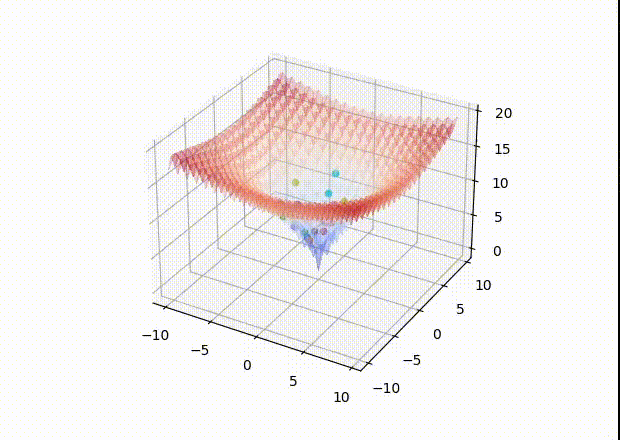
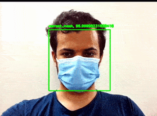
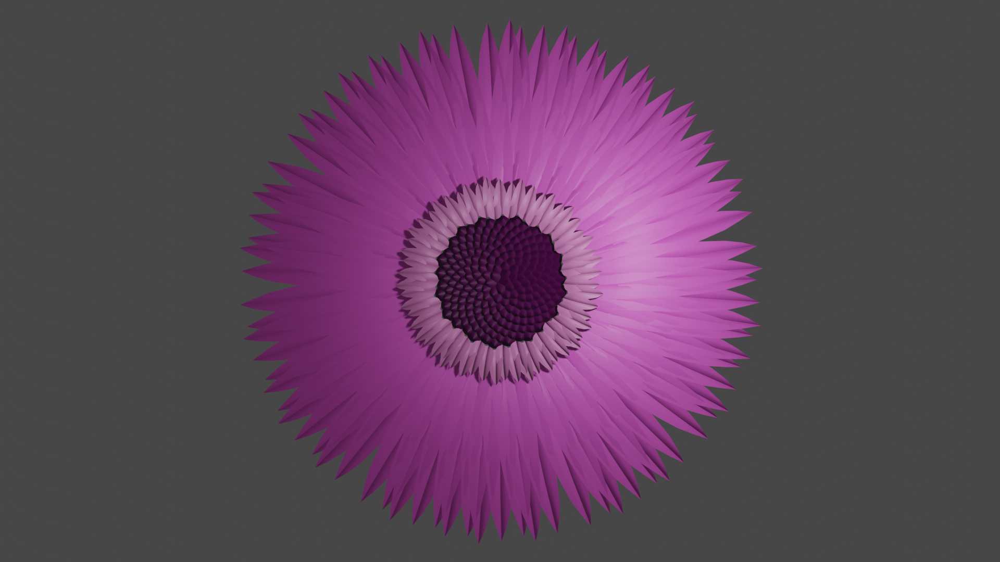
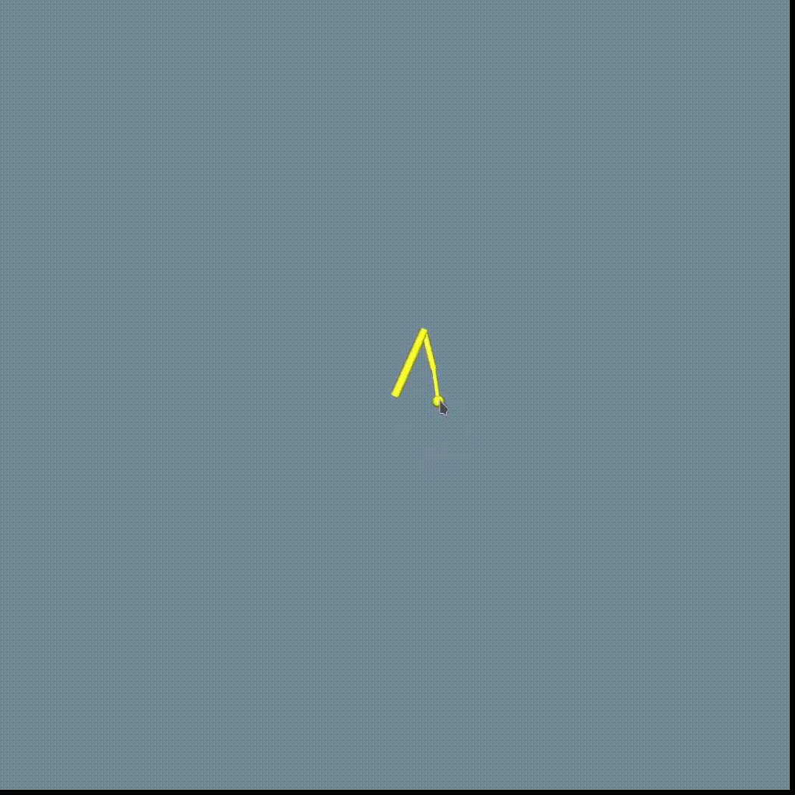
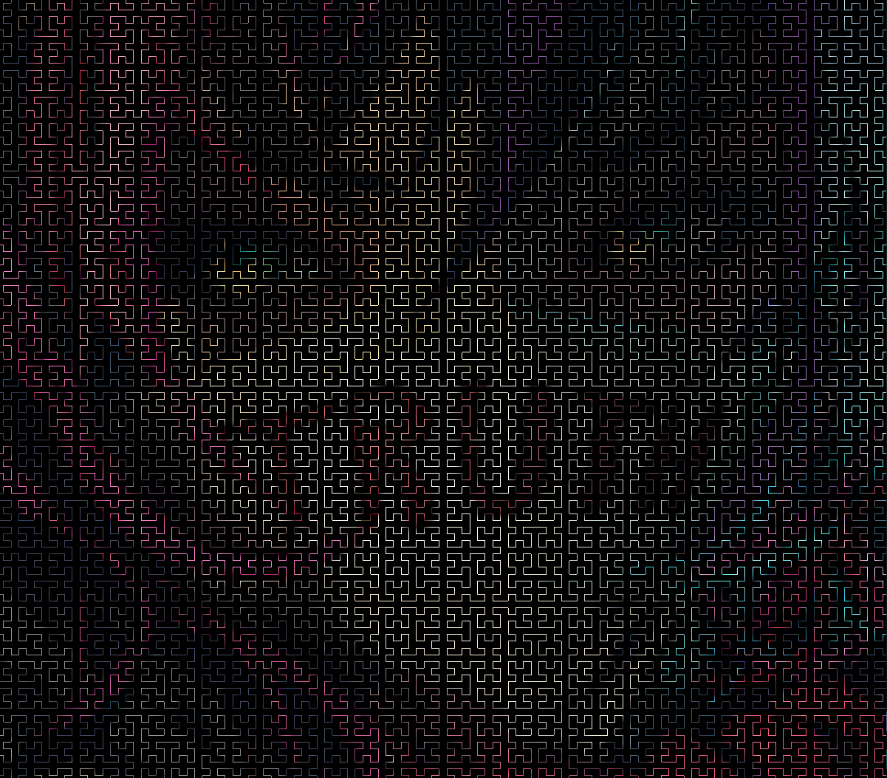
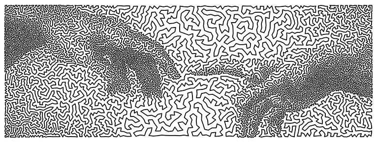

Projects
- NIA | github
NIA is a Python package that offers Nature-Inspired Optimization Algorithms, streamlining the optimization process and optimizing its speed.
Solving ackley using genetic algorithm:

- Face Mask Detection | github

The Face Mask Detection project is a powerful tool designed to accurately determine whether an individual is wearing a face mask or not.
- phyllotaxis | github

Phyllotaxis is the intriguing pattern that occurs in certain plants, such as the daisy flower. In this project, we utilized advanced calculations to determine the precise locations of both seeds and petals. By leveraging the powerful Blender API, we then created an impressive 3D model of the daisy flower.
- L-System | github
L-System, also called Lindenmayer System, is a formal grammar that can create intricate patterns present in nature, like fractals, spiral shells, and branching plants. This project is a C++ shared library that defines an L-system and generates any desired iteration of it. Additionally, it produces the shape’s geometry, which can be drawn using any rendering API. The repository also has multi-threading branches that can significantly enhance the process speed, up to 10 times faster.
- SOM-Graph | github
This project implements the Self-Organizing Map algorithm to optimize the placement of graph nodes for improved visualization and analysis.
- AC3 | github
This is a high-performance C++ shared library designed to solve the Arc Consistency 3.
- Roller-Coaster

This project is an roller-coaster simulator that generates its path using B-spline and arc-length parameterization techniques. The roller-coaster cabins’ speed and angle have been calculated accurately using physics principles, resulting in a realistic and smooth animation.
- Articulated Structure

This project focuses on the precise movement of an articulated structure’s head to a specific target point, solely based on the endpoint information. By employing advanced techniques such as Inverse Kinematics and Skinning, the project achieves accurate and realistic motion control.
- Cloth Simulation
In this project, we simulate the behavior of cloth under various conditions. We model the cloth as a grid of masses connected by springs to each other. The outcome demonstrates a high level of realism and physical accuracy.


- Reynolds Model

Craig Reynolds proposed a model to simulate the natural phenomenon of aggregate motion observed in flocks of birds, schools of fish, and swarms of insects. This project utilizes the Reynolds model to simulate the behavior of a group of objects, resulting in a realistic simulation of their movements and interactions.
- Hilbert Curve | github

The Hilbert curve is a fascinating space-filling fractal that, after a few iterations, can cover an entire given space. In this project, we applied colors extracted from a given image to the curve’s lines, resulting in an aesthetically pleasing filter for the image.
- TSP-Art | github

The Travelling Salesman Problem (TSP) involves finding the shortest path through a series of points. In this project, we have taken a unique approach by generating points from a given picture. We then solve the TSP for these points, resulting in a visually stunning image with an artistic flair.